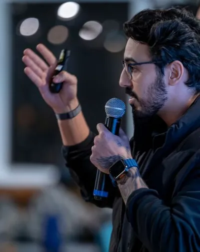

Sobre
Julio Cataldo
Head de Segurança, DevOps e SRE · Instrutor universitário
Head de Segurança, DevOps e SRE com visão ofensiva e defensiva. Lidero o caminho do código à produção: AppSec, DevSecOps, plataforma de engenharia, observabilidade e resposta a incidentes, com segurança desde a concepção e foco em valor para o negócio.
Instrutor universitário, formado pela FIAP, e entusiasta da educação como ferramenta de transformação social.
Do código à produção
As frentes em que eu trabalho e sobre as quais escrevo aqui.
AppSec
Segurança desde a concepção: modelar ameaças antes de escrever a primeira linha.
DevSecOps
Controles de segurança dentro do pipeline, sem travar quem entrega.
Plataforma de engenharia
O caminho padrão já seguro, para que o jeito certo seja também o mais fácil.
Observabilidade e SRE
Enxergar o sistema de verdade: confiabilidade e detecção andam juntas.
Resposta a incidentes
Conter, aprender e voltar mais forte, com visão ofensiva e defensiva.
Por que este site existe
Porque educação transforma. Tudo aqui é gratuito, em português e escrito do zero: o que eu gostaria de ter encontrado quando comecei e o que uso em sala de aula.
Guia e Trilhas
O mapa da área e caminhos por função, com uma trilha gamificada.
Abrir → O que eu estudoNotas e Teia
Meu segundo cérebro: notas de estudo ligadas num grafo.
Abrir → Labs das aulasLabs no GitHub
Threat Modeling, Supply Chain e SOC: os labs práticos que uso com as turmas.
Abrir ↗